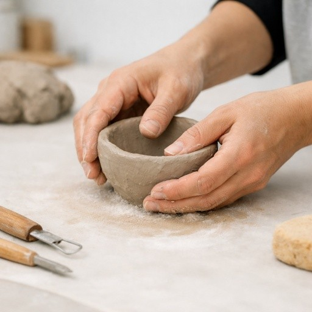
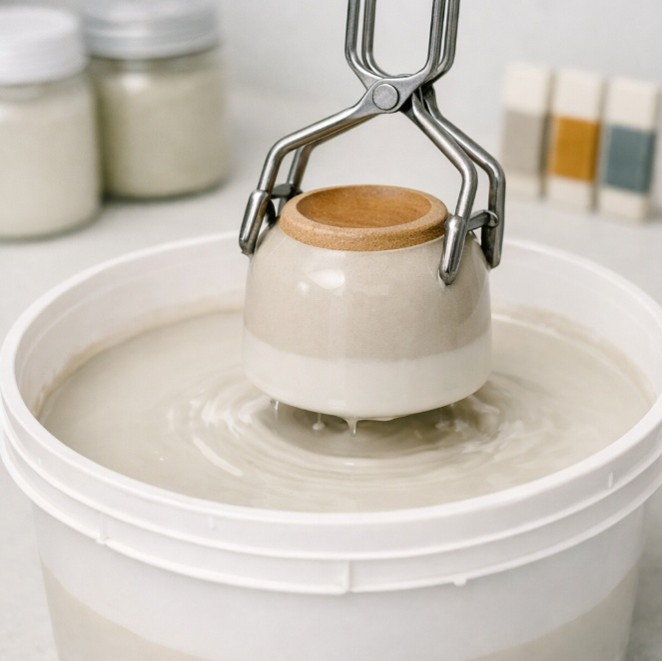

About Site
Pottery Roots is dedicated to the craft of handmade ceramics, from initial shaping to final glaze. This site serves as a resource for exploring traditional pottery techniques, glazing methods, and the principles behind creating functional and decorative ceramic pieces. Whether you are new to pottery or looking to deepen your understanding of the process, you'll find practical information here.
About Techniques
Every ceramic piece begins with a shaping technique. Pinching, coiling, slab construction, and wheel throwing each produce distinct results and require different skills. Learn more about these techniques and how each one influences the final form.

About Glazing
Glazing is the final and defining step in ceramic production, determining color, texture, and finish. Explore the glazing process and the considerations involved in selecting the right glaze for each piece.
